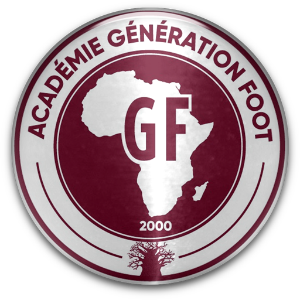
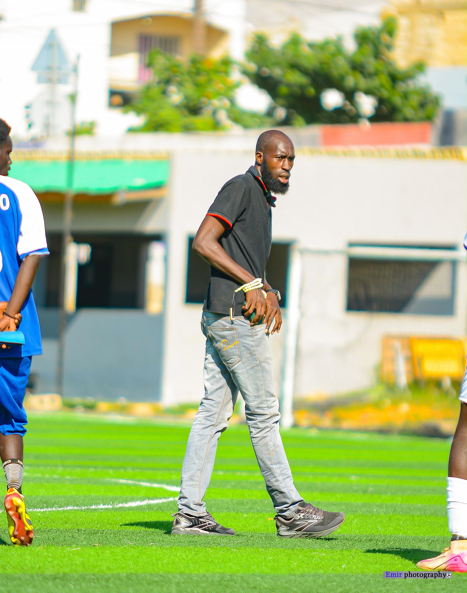
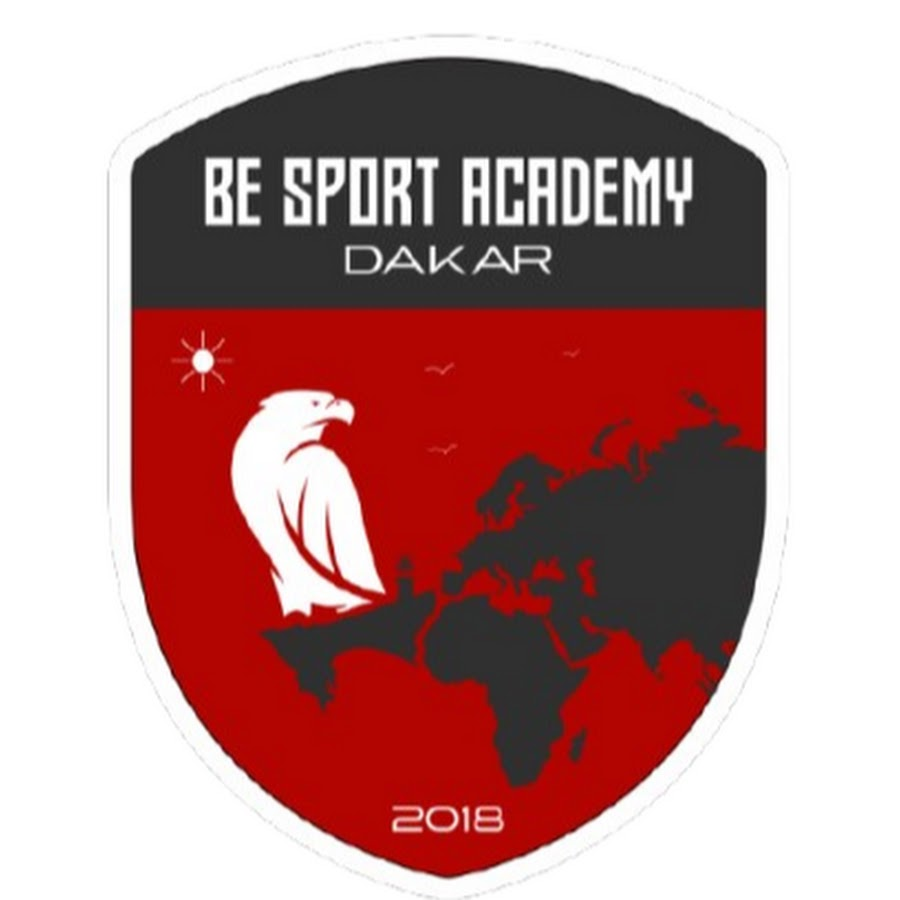
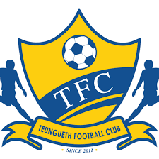
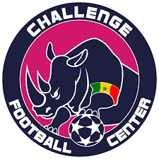

AdversaireGeneration Foot
Un rendez-vous formateur face a une reference reconnue du football senegalais.
Former des joueurs solides, responsables et prets pour l'exigence du football moderne.
Centre Loco est née d'une conviction profonde et d'une idée simple : le talent footballistique sénégalais, pour s'exprimer au plus haut niveau, a besoin d'une structure exigeante, lisible et régulière. Loin d'être un simple espace de jeu, notre centre se positionne comme un véritable tremplin où la passion rencontre la rigueur. Nous accueillons des jeunes joueurs motivés et déterminés, pour les accompagner pas à pas dans un cadre où l'excellence sportive s'harmonise parfaitement avec un suivi éducatif et citoyen indispensable.
Notre philosophie repose sur une progression linéaire et structurée. C'est pourquoi chaque catégorie d'âge dispose d'objectifs sportifs rigoureusement adaptés à son niveau de développement :
L'initiation et la maîtrise technique : Permettre aux plus jeunes d'acquérir les gestes fondamentaux et la fluidité avec le ballon.
La compréhension tactique : Développer l'intelligence de jeu, le placement sur le terrain et la lecture des situations de match.
La gestion de l'effort : Préparer les corps aux exigences athlétiques modernes tout en transmettant la culture de l'endurance et du dépassement de soi.
L'esprit collectif et le leadership : Forger des compétiteurs solidaires, fiers de leurs couleurs, capables de collaborer dans le respect mutuel et d'assumer des responsabilités sur le terrain comme en dehors.
En combinant une discipline rigoureuse aux valeurs de solidarité, Centre Loco ne prépare pas seulement les joueurs à affronter les grandes échéances de la saison ; elle bâtit les fondations d'une académie de référence, tournée vers l'avenir et le professionnalisme.

Centre Loco a l'opportunite de se mesurer a de grands centres de formation lors de matchs speciaux qui permettent a nos joueurs de progresser, de se tester et de gagner en experience.

AdversaireUn rendez-vous formateur face a une reference reconnue du football senegalais.

AdversaireUne opposition intense pour developper le rythme, la concentration et la maturite collective.

AdversaireUn match special pour apprendre a repondre aux exigences d'un club structure et ambitieux.

AdversaireUne rencontre de haut niveau pour tester la discipline, la solidarite et l'intelligence de jeu.